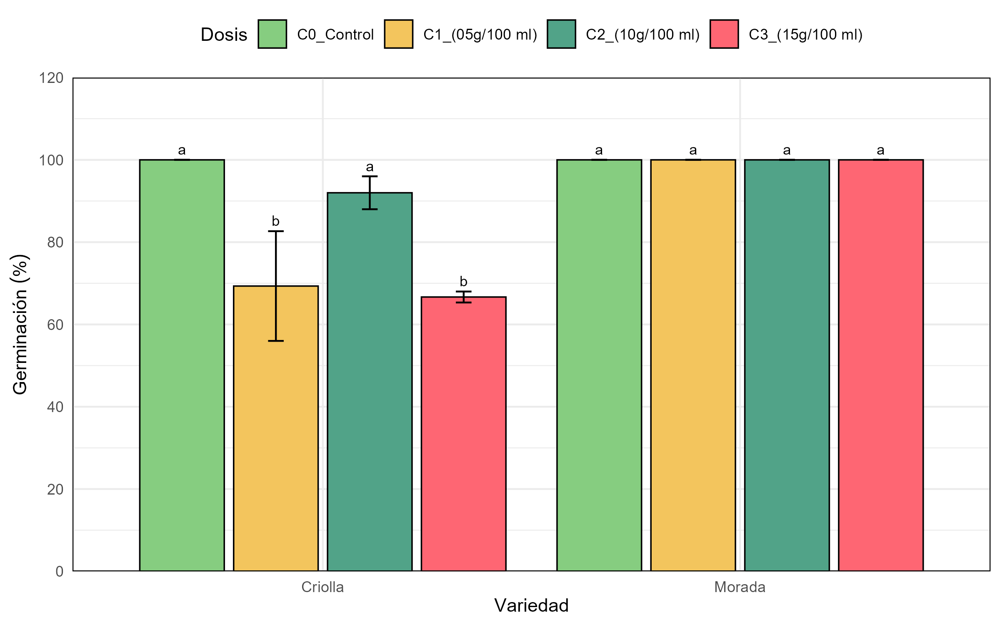
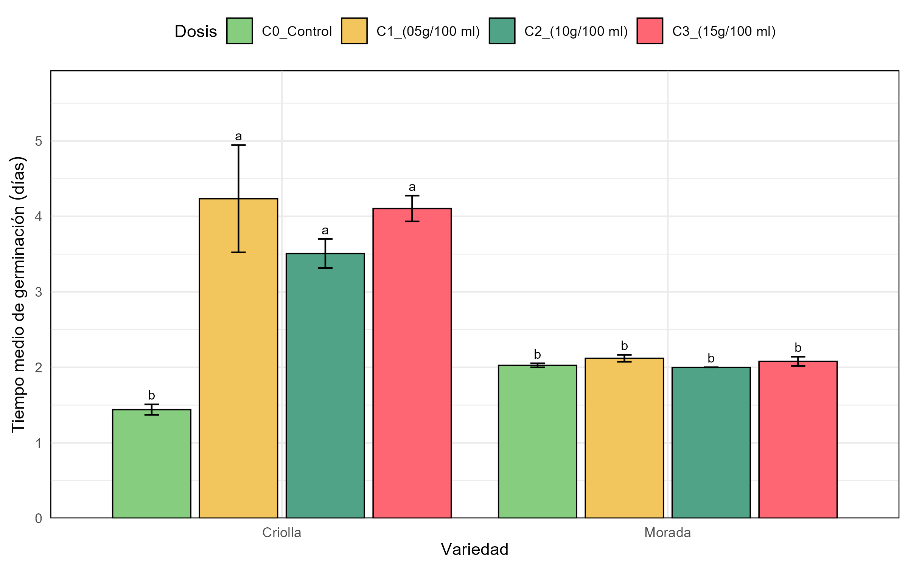
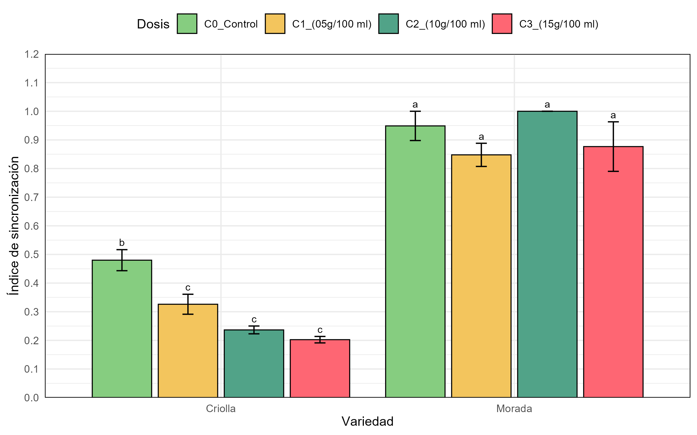
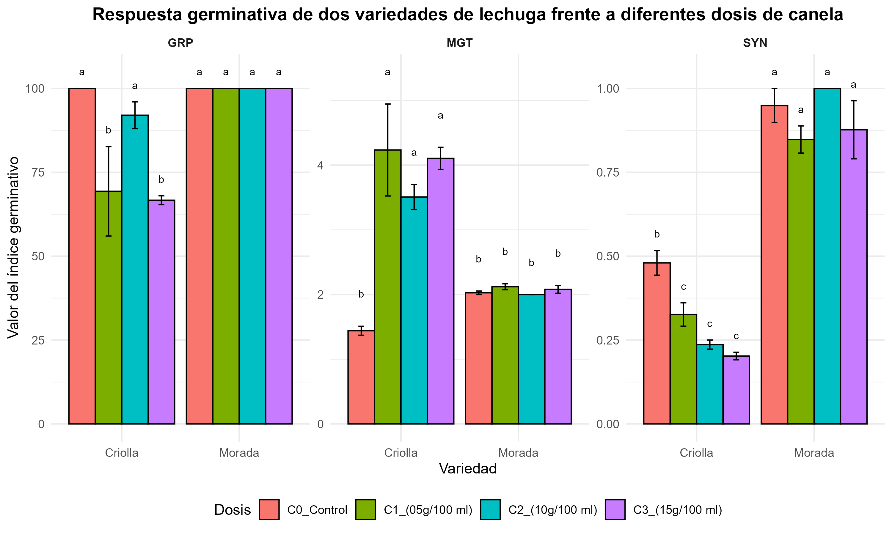

Resultados y Discusiones
1. Resultados
El presente experimento evaluó el efecto de diferentes concentraciones de infusión de canela sobre la germinación de semillas de lechuga de dos variedades (criolla y morada), con el objetivo de analizar su comportamiento germinativo a partir de tres índices clave: el porcentaje de germinación (GRP), el tiempo medio de germinación (MGT) y el índice de sincronización (SYN). Los datos fueron sometidos a un análisis de varianza factorial (ANOVA 4×2) y a pruebas de comparación de medias, considerando un nivel de significancia de α = 0.05. A continuación, se presentan los resultados obtenidos.
1.1. Porcentaje de germinación (GRP)

En la Figura 1, se muestra el porcentaje de germinación de dos variedades de lechuga, criolla y morada, expuestas a diferentes concentraciones de infusión de canela (0, 0.5, 10 y 15 g/100 ml). En la variedad criolla, se observa que el tratamiento control (C0) obtuvo el porcentaje más alto de germinación, estadísticamente igual al tratamiento C2 (10 g/100 ml). Sin embargo, las concentraciones C1 (0.5 g/100 ml) y C3 (15 g/100 ml) presentaron una disminución significativa en la germinación (alrededor del 67–69%), mostrando una diferencia estadística (letra "b") respecto a los tratamientos más efectivos (letra "a").
Por otro lado, la variedad morada no presentó diferencias significativas entre tratamientos. En todos los tratamientos (C0, C1, C2 y C3), la germinación se mantuvo en niveles cercanos al 100%, lo cual indica una alta tolerancia de esta variedad a la presencia de canela en el medio. Los resultados obtenidos permiten determinar que la variedad morada es más resistente a los efectos del extracto de canela en comparación con la criolla. Además, la concentración de 10 g/100 ml (C2) parece ser segura para ambas variedades, ya que no afecta negativamente la germinación.
1.2. Tiempo medio de germinación (mgt)

En la Figura 2, se observa el comportamiento del tiempo medio de germinación (mgt ) en las dos variedades de lechuga, criolla y morada, sometidas a cuatro tratamientos correspondientes a distintas dosis de una sustancia (C0: control, C1: 5 g/100 ml, C2: 10 g/100 ml y C3: 15 g/100 ml).
En la variedad criolla, se pudo observar influencia de las dosis aplicadas sobre el tiempo medio de germinación. El tratamiento C0 (control) presentó el menor tiempo de germinación (aproximadamente 1.5 días), siendo estadísticamente diferente de los tratamientos con dosis (C1, C2 y C3), los cuales mostraron un aumento significativo en el mgt, alcanzando valores superiores a 4 días. Las letras indicadas sobre las barras reflejan diferencias estadísticamente significativas (p < 0.05), agrupando al tratamiento C0 con la letra “b”, mientras que los demás comparten la letra “a”, sin diferencias entre ellos.
Por otro lado, en lo que respecta la variedad morada, no se observaron diferencias significativas entre tratamientos, esto debido a que todos los tratamientos, incluyendo el control y las distintas dosis aplicadas, presentaron tiempos de germinación similares, cercanos a los 2 días, y comparten la misma letra (“b”), lo cual indica que la sustancia no influyó significativamente sobre la germinación en esta variedad.
Estos resultados muestran que la variedad criolla es más sensible a la aplicación de la sustancia evaluada (infusión de canela), presentando una germinación tardía con el aumento de las dosis. Por otro lado, la variedad morada mostró una mayor tolerancia o resistencia, manteniendo su comportamiento germinativo estable independientemente del tratamiento.
1.3. Índice de sincronización (syn)

En la figura 3, se evaluó el efecto de diferentes concentraciones de infusiones de canela (C1: 5 g/100 ml, C2: 10 g/100 ml, y C3: 15 g/100 ml) sobre dicho índice en dos variedades de lechuga: criolla y morada.
En la variedad criolla, se observó una disminución significativa del índice de sincronización con el aumento de la concentración de la infusión. El tratamiento control (C0) presentó el mayor valor, indicando una germinación relativamente uniforme. Sin embargo, los tratamientos con infusión de canela (C1, C2 y C3) mostraron valores menores, cercanos a 0.3 o incluso inferiores. Estadísticamente, el tratamiento control fue diferente a los demás (letra “b”), mientras que las tres concentraciones evaluadas no mostraron diferencias entre sí (letra “c”), indicando que la infusión, independientemente de la dosis, afecta negativamente la sincronización del proceso germinativo en esta variedad.
La variedad morada presentó un comportamiento altamente estable. Todos los tratamientos, incluyendo el control y las diferentes concentraciones de infusiones de canela, mantuvieron índices elevados (entre 0.85 y 1.0), sin diferencias estadísticas significativas (letra “a”). Esto evidencia que, en esta variedad, la germinación fue altamente sincronizada y no se vio afectada por la presencia de infusión de canela, incluso en concentraciones elevadas.
Estos resultados permiten determinar que la respuesta a la infusión de canela está estrechamente relacionada con la variedad, por lo tanto, la variedad criolla es más susceptible, presentando una disminución notable en la uniformidad de germinación, lo cual podría deberse a una mayor sensibilidad fisiológica frente a los compuestos aleloquímicos presentes en la canela. Por el contrario, la variedad morada muestra una mayor tolerancia, manteniendo su capacidad de sincronizar el proceso germinativo aun en condiciones bioquímicamente adversas.
1.4. Interacción entre variedad y dosis de infusión de canela en la germinación de semillas de lechuga

En la Figura 4, se presenta el comportamiento germinativo de las semillas de lechuga criolla y morada evaluado mediante tres indicadores: porcentaje de germinación (GRP), tiempo medio de germinación (MGT) e índice de sincronización (SYN), en función de diferentes concentraciones de infusión de canela.
La variedad morada mostró una respuesta germinativa más favorable frente a las diferentes concentraciones de infusión de canela en comparación con la variedad criolla. En todos los tratamientos, la morada presentó porcentajes de germinación altos (alrededor del 100%), un tiempo medio de germinación más corto (entre 2 y 2.5 días) y un índice de sincronización cercano a 1, lo que indica una germinación rápida y uniforme. Mientras tanto la variedad criolla fue más sensible, con menores tasas de germinación, mayor tiempo medio (hasta 4.5 días) y un índice de sincronización bajo (alrededor de 0.2 a 0.5), especialmente en las dosis más altas de canela.
2. Discusión
Los resultados obtenidos muestran que la infusión de canela tiene un impacto en la germinación de las semillas de lechuga, pero este efecto varía según la dosis aplicada, se observa que las dosis más altas de canela (C2 y C3) disminuyen tanto el índice de germinación (GRP) como la sincronización de la germinación (SYN), lo que sugiere un efecto inhibidor de la canela en la germinación de las semillas. Sin embargo, no se encontró un cambio significativo en el tiempo promedio de germinación (MGT) entre las diferentes dosis, lo que indica que el tiempo de germinación no se ve tan afectado por la canela como otros parámetros, como el índice de germinación y la sincronización. Carmello y Cardoso (2018) probaron extractos acuosos de canela al 5 % en semillas de lechuga y encontraron que, además de inhibir completamente el hongo Cercospora longissima, no hubo un efecto negativo en la germinación a corto plazo. Sin embargo, observaron una disminución en el índice de velocidad de germinación, lo que coincide con que dosis más elevadas de canela pueden ralentizar la germinación.
Existe la posibilidad que la canela, en concentraciones altas, actúe como un inhibidor biológico debido a sus compuestos activos, como los aceites esenciales y los polifenoles, que podrían interferir con los procesos fisiológicos de las semillas. Investigaciones realizadas han sugerido que sustancias naturales como la canela tienen propiedades antimicrobianas y antifúngicas, lo que podría explicar su impacto en la germinación, al afectar la actividad metabólica necesaria para el proceso germinativo.
En un estudio realizado por Kowalska et al., (2021) se evidenció que el aceite de canela ejerce un efecto fitotóxico, manifestado en una disminución significativa en la emergencia de plántulas, especialmente cuando se utilizó una concentración del 15%. Esta toxicidad también se reflejó en una menor velocidad y uniformidad en la emergencia, así como en la reducción del número total de plantas establecidas. Dichos efectos negativos pueden atribuirse a la presencia de compuestos fenólicos y aldehídicos en el aceite de canela, como el cinamaldehído, los cuales en altas concentraciones pueden inhibir procesos fisiológicos esenciales durante la germinación.